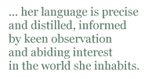

Alison Brackenbury’s love of, and connection with, the natural world has always been evident in her poetry collections. In this pamphlet from Happenstance Press, she has assembled a group of poems about animals and birds, none of which appear in any of her eight collections.
There would be a risk, in collecting together poems about animals including ailing catsand injured hedgehogs, of sentimentality or — even worse — cuteness. Brackenbury is far too skilled a poet to fall into those traps though: while the poems are often tender and contain honest emotion, they never come close to tipping into bathos and she shows an unflinching honesty in the face of the realities of the natural world.
Rough as coals, raw steel,
the dead bird, in its hunch of black, will lie
where two wings brush, where three crows lift and cry.
(‘Rendezvous’)
Brackenbury’s craft and control is as skilled as should be expected from a poet of her experience; her language is precise and distilled, informed by keen observation and abiding interest in the world she inhabits.
The bird
flits down, swollen, small brown word.
The male, who wove each nest, is heard
shrilled, triumphant; darts up when
other birds shrink from storm or fen,
shouts to the saintless. Rain, wren, wren.
(‘St Kilda’s Wren’)
It would be misleading to suggest these poems were only to do with nature observed: the poet is very present, as are other humans such as John Wesley and George Stubbs. Brackenbury’s voice in the poems is terribly aware of the fragility of life and terribly open to the realities of ageing and death, as in the final stanza of ‘John Wesley’s Horse’; the bleakness of ‘I face deeper night’ redeemed by the wry humour of the last sentence:
John Wesley, I face deeper night.
I stare into the same blind light.
I wish you, in the empty hearse,
Your horse’s heaven. You could do worse.
There are just twenty-four poems in this pamphlet yet, while reading, it feels as if it is a much bigger book because of the layering of meaning in many of the poems. As a reader, I can delight in the deft language and the startling aptness of a fresh simile as in ‘Rescue Centre’, ‘And here are the hares — / a dozen, calm as fruit’, or in ‘May Day’, ‘In blur of rain/ its body sucks the silence from our sky’. Yet there is always a pointer to look deeper than acute observation, always something to turn back inwards to thoughts of the human condition:
The mares glow like guineas. Their flanks hold the heat
of the hands curled on dusk in a Bloomsbury Street.
(‘Stubbs and the horse’)
Often those lines that turn us away from observation to deeper thought are lines that both sing and startle, as in the ending of ‘Lapwings’, a poem about the disappearance of these birds from Brackenbury’s childhood home of Lincolnshire; among my favourite lines in the book:
When their raw cries swept over, my head spun
with all the brilliance of their black and white
as though you cracked the dark and found the sun.
Ann Drysdale: Quaintness and Other Offences, Cinnamon Press 2009
Ann Drysdale is one of a group of established poets who were left without a publisher when Peterloo Poets ceased trading in 2009. I was delighted to find that she has found a home with Cinnamon Press for this, her fifth poetry collection.
The title, part of a quote from John Ruskin about Christina Rossetti, together with the Beryl Cook cover illustration, indicate the dry wit, quirkiness and humanity that Drysdale’s readers expect. There is humour in this collection, ranging from the wry smile to the laugh out loud, but it would be a grave mistake to think of this book as a collection of ‘light verse’ because Drysdale’s skill, honesty and intelligence offer the reader so much more.
Drysdale’s facility with form is always admirable and this collection is no exception; from free verse to impeccably crafted sonnets, each poem’s form seems the only possible form for that poem. It is difficult, in a brief review, to do justice to a collection of such range and depth. There are poems of love — re-discovered, lost, unrequited — poems about dust, spiders, politics, poetry, old boats and road accidents. I have found it difficult to choose poems to illustrate this review: my copy of the book has grown a decorative fringe of post-it bookmarks, each indicating a poem I’d like to quote from.
There are poems that made me laugh in delighted recognition, such as ‘Trying Again’, about a woman embarking on a relationship after time alone:
Stepping out into the old arena
With threadbare kit, and not entirely sure
If it will still work under field conditions.
And oh, it does! The cunty, clitty bits
Are still a go. They still remember, bless ’em,
How human bodies operate à deux,
or a grimmer recognition as in ‘Port of Call’ where Drysdale’s hospital visit to her mother segues into a determination to control her own life — and death:
Backwards it comes, then. Nearer and nearer —
Do it, my heart says, artfully, craftily.
Do it. Do it now.
The naval metaphor of this poem — ‘I am the steward of my ship. my duties/ Include a full test of the escape drill’ — inevitably bringing to mind Henley’s ‘Invictus’ and a head ‘bloody, but unbowed’.
There are poems that could move a reader to tears, or helpless rage, as in ‘The Red Mud of Lydney’ where Drysdale recounts a four-by-four driver insisting on right of way over her and a wheelchair in deep mud. The longer line and perfect rhymes evoking, for me, the physical effort of hauling through the mire:
Each time I see the wheelchair standing empty in the shed
Still muddily encrusted in that special shade of red
It galls me and appals and transports me back again
To the loneliness and hopelessness of Lydney in the rain.
This is, as are a number of poems in the book, personal to the poet but they never feel exclusive or intrusive because Drysdale is a poet who is outward-looking, often leavening the darkest of moments with keen observation and desert-dry humour: ‘Oh, I would have pulled a forelock if I’d had a hand to spare’.
I find myself needing to bring this to a close and still feeling that I haven’t represented the book fairly. I haven’t celebrated the delightful quirkiness of poems such as ‘The Defeated Hare Questions the Value of Retromingency’, nor shown the surprising shift to tenderness in ‘Sleeping Together’: ‘A heaven-given opportunity/ Of cherishing another human body/ In all its perilous proximity’. In ‘I am becoming my grandmother’, Drysdale shows an amused self-deprecation:
Dap-slapping my way across East Anglia,
Now and then turning my face up to heaven
Like a tanned leather bottle full of questions
It is perhaps her being ‘full of questions’ that creates the richness of this collection: the poems question life, death, ageing, love, and the limitless variety of humanity.